2026 Higher Mathematics - Paper 1 marking instructions
Source: Scottish Qualifications Authority (SQA) / Qualifications Scotland. This is a StemInteract HTML companion, not an official HTML edition. Selectable text is supplied alongside original page images. Use the images or original PDF for equations, powers, fractions, vector notation, tables and diagrams; text extraction cannot fully preserve mathematical layout.
Jump to a question
PDF page 1
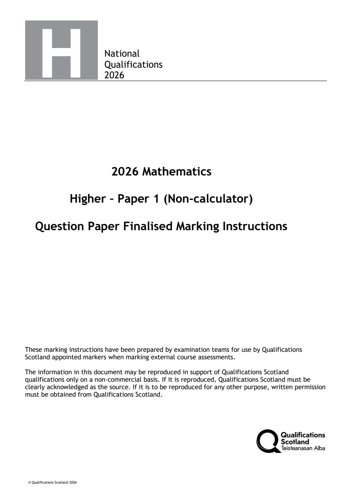
Selectable page text
National
Qualifications
2026
2026 Mathematics
Higher – Paper 1 (Non-calculator)
Question Paper Finalised Marking Instructions
These marking instructions have been prepared by examination teams for use by Qualifications
Scotland appointed markers when marking external course assessments.
The information in this document may be reproduced in support of Qualifications Scotland
qualifications only on a non-commercial basis. If it is reproduced, Qualifications Scotland must be
clearly acknowledged as the source. If it is to be reproduced for any other purpose, written permission
must be obtained from Qualifications Scotland.
© Qualifications Scotland 2026PDF page 2
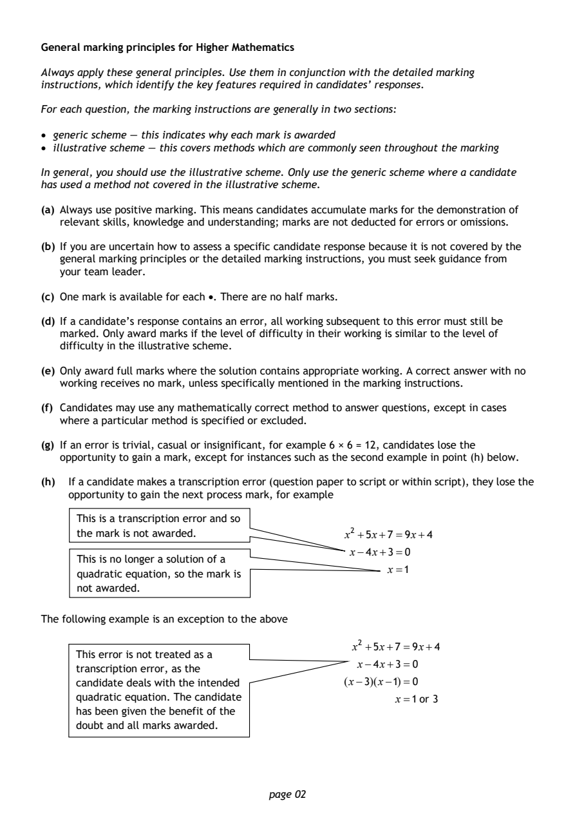
Selectable page text
General marking principles for Higher Mathematics
Always apply these general principles. Use them in conjunction with the detailed marking
instructions, which identify the key features required in candidates’ responses.
For each question, the marking instructions are generally in two sections:
• generic scheme — this indicates why each mark is awarded
• illustrative scheme — this covers methods which are commonly seen throughout the marking
In general, you should use the illustrative scheme. Only use the generic scheme where a candidate
has used a method not covered in the illustrative scheme.
(a) Always use positive marking. This means candidates accumulate marks for the demonstration of
relevant skills, knowledge and understanding; marks are not deducted for errors or omissions.
(b) If you are uncertain how to assess a specific candidate response because it is not covered by the
general marking principles or the detailed marking instructions, you must seek guidance from
your team leader.
(c) One mark is available for each •. There are no half marks.
(d) If a candidate’s response contains an error, all working subsequent to this error must still be
marked. Only award marks if the level of difficulty in their working is similar to the level of
difficulty in the illustrative scheme.
(e) Only award full marks where the solution contains appropriate working. A correct answer with no
working receives no mark, unless specifically mentioned in the marking instructions.
(f) Candidates may use any mathematically correct method to answer questions, except in cases
where a particular method is specified or excluded.
(g) If an error is trivial, casual or insignificant, for example 6 × 6 = 12, candidates lose the
opportunity to gain a mark, except for instances such as the second example in point (h) below.
(h) If a candidate makes a transcription error (question paper to script or within script), they lose the
opportunity to gain the next process mark, for example
This is a transcription error and so
the mark is not awarded. x² +5x+7 =9x+4
x−4x+3=0
This is no longer a solution of a
x=1
quadratic equation, so the mark is
not awarded.
The following example is an exception to the above
x² +5x+7 =9x+4
This error is not treated as a
x−4x+3=0
transcript ion err or, as the
candidate deals with the intended (x−3)(x−1)=0
quadratic equation. The candidate x=1 or 3
has been given the benefit of the
doubt and all marks awarded.
page 02PDF page 3
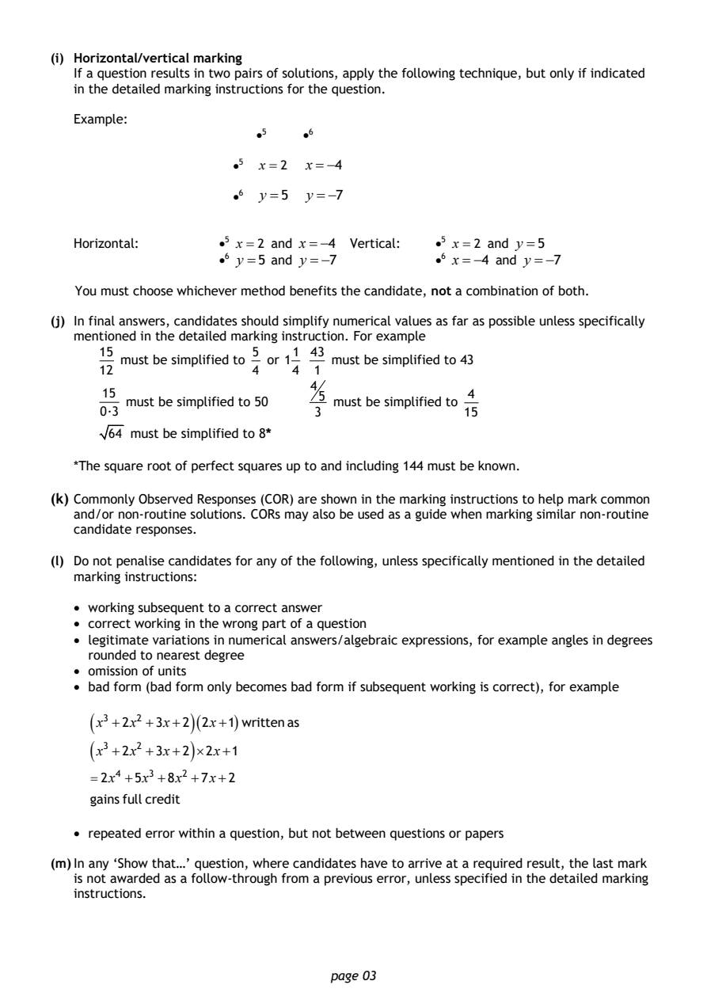
Selectable page text
(i) Horizontal/vertical marking
If a question results in two pairs of solutions, apply the following technique, but only if indicated
in the detailed marking instructions for the question.
Example:
•5 •6
•5 x =2 x=−4
•6 y=5 y=−7
Horizontal: •5 x =2 and x=−4 Vertical: •5 x =2 and y=5
•6 y=5 and y=−7 •6 x=−4 and y=−7
You must choose whichever method benefits the candidate, not a combination of both.
(j) In final answers, candidates should simplify numerical values as far as possible unless specifically
mentioned in the detailed marking instruction. For example
15 5 1 43
must be simplified to or 1 must be simplified to 43
12 4 4 1
4
15 5 4
must be simplified to 50 must be simplified to
0·3 3 15
64 must be simplified to 8*
*The square root of perfect squares up to and including 144 must be known.
(k) Commonly Observed Responses (COR) are shown in the marking instructions to help mark common
and/or non-routine solutions. CORs may also be used as a guide when marking similar non-routine
candidate responses.
(l) Do not penalise candidates for any of the following, unless specifically mentioned in the detailed
marking instructions:
• working subsequent to a correct answer
• correct working in the wrong part of a question
• legitimate variations in numerical answers/algebraic expressions, for example angles in degrees
rounded to nearest degree
• omission of units
• bad form (bad form only becomes bad form if subsequent working is correct), for example
(
x³ +2x² +3x+2
)(2x+1)
written as
( )
x³ +2x² +3x+2 ×2x+1
=2x⁴ +5x³ +8x² +7x+2
gains full credit
• repeated error within a question, but not between questions or papers
(m) In any ‘Show that…’ question, where candidates have to arrive at a required result, the last mark
is not awarded as a follow-through from a previous error, unless specified in the detailed marking
instructions.
page 03PDF page 4
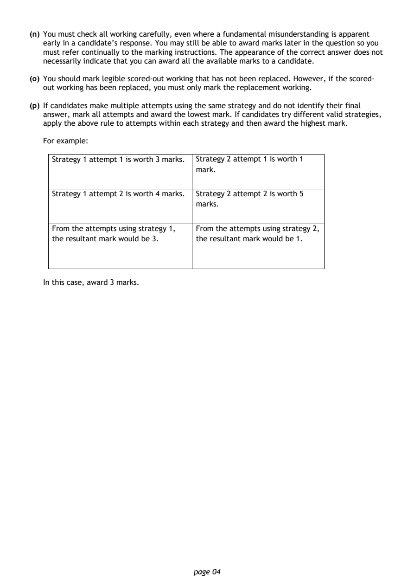
Selectable page text
(n) You must check all working carefully, even where a fundamental misunderstanding is apparent
early in a candidate’s response. You may still be able to award marks later in the question so you
must refer continually to the marking instructions. The appearance of the correct answer does not
necessarily indicate that you can award all the available marks to a candidate.
(o) You should mark legible scored-out working that has not been replaced. However, if the scored-
out working has been replaced, you must only mark the replacement working.
(p) If candidates make multiple attempts using the same strategy and do not identify their final
answer, mark all attempts and award the lowest mark. If candidates try different valid strategies,
apply the above rule to attempts within each strategy and then award the highest mark.
For example:
Strategy 1 attempt 1 is worth 3 marks. Strategy 2 attempt 1 is worth 1
mark.
Strategy 1 attempt 2 is worth 4 marks. Strategy 2 attempt 2 is worth 5
marks.
From the attempts using strategy 1, From the attempts using strategy 2,
the resultant mark would be 3. the resultant mark would be 1.
In this case, award 3 marks.
page 04PDF page 5
Paper 1, Question 1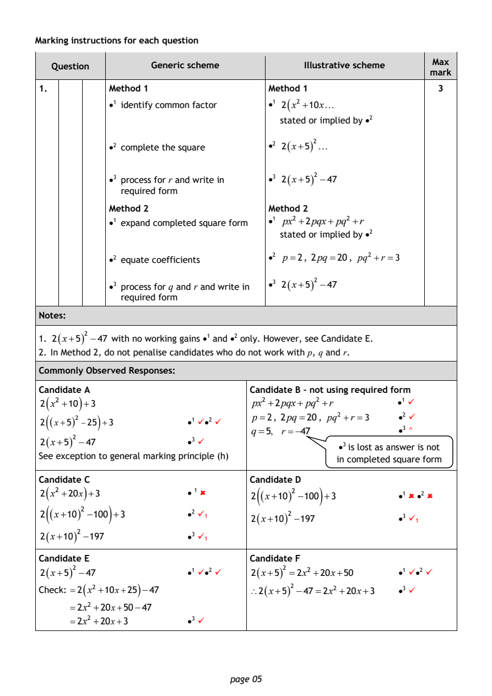
Selectable page text
Marking instructions for each question
Max
Question Generic scheme Illustrative scheme
mark
1. Method 1 Method 1 3
•1 identify common factor •1 2 ( x² +10x…
stated or implied by •²
•2 complete the square •2 2(x+5)²…
•3 process for r and write in •3 2(x+5)² −47
required form
Method 2 Method 2
•1 expand completed square form •1 px²+2pqx+ pq²+r
stated or implied by •²
•2 equate coefficients •2 p=2, 2pq=20, pq² +r =3
•3 process for q and r and write in •3 2(x+5)² −47
required form
Notes:
1. 2(x+5)² −47 with no working gains •¹ and •² only. However, see Candidate E.
2. In Method 2, do not penalise candidates who do not work with p, q and r.
Commonly Observed Responses:
Candidate A Candidate B – not using required form
2 ( x² +10 ) +3 px²+2pqx+ pq²+r •1 ✓
( ) p=2, 2pq=20, pq² +r =3 •2 ✓
2 (x+5)² −25 +3 •1 ✓•2 ✓
q=5, r =−47 •3 ^
2(x+5)² −47 •3 ✓
•3 is lost as answer is not
See exception to general marking principle (h)
in completed square form
Candidate C Candidate D
2 ( x²+20x ) +3 • 1 2 ( (x+10)² −100 ) +3 •1 •2
( )
2 (x+10)² −100 +3 •2 ✓ 1 2(x+10)² −197 •3 ✓
1
2(x+10)² −197 •3 ✓
1
Candidate E Candidate F
2(x+5)² −47 •1 ✓•2 ✓ 2(x+5)² =2x²+20x+50 •1 ✓•2 ✓
Check: =2 ( x² +10x+25 ) −47 ∴2(x+5)² −47=2x² +20x+3 •3 ✓
=2x² +20x+50−47
=2x² +20x+3 •3 ✓
page 05PDF page 6
Paper 1, Question 2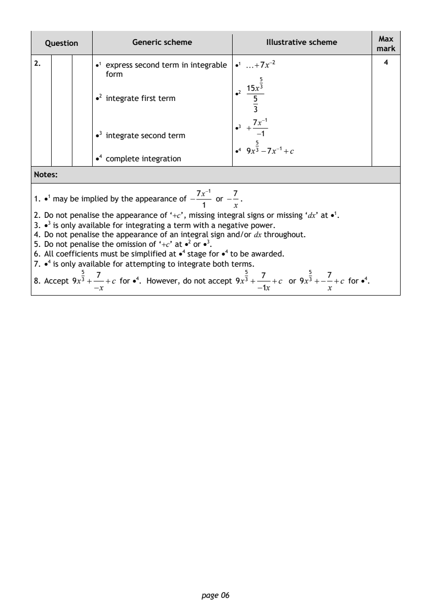
Selectable page text
Max
Question Generic scheme Illustrative scheme
mark
2. •1 express second term in integrable •¹ +7x⁻² 4
form
15x⁵³
•2
•2 integrate first term 5
3
7x⁻¹
•3 +
•3 integrate second term −1
•4 9x⁵³ −7x⁻¹+c
•4 complete integration
Notes:
7x⁻¹ 7
1. •¹ may be implied by the appearance of − or − .
1 x
2. Do not penalise the appearance of ‘+c’, missing integral signs or missing ‘dx’ at •¹.
3. •³ is only available for integrating a term with a negative power.
4. Do not penalise the appearance of an integral sign and/or dx throughout.
5. Do not penalise the omission of ‘+c’ at •² or •³.
6. All coefficients must be simplified at •⁴ stage for •⁴ to be awarded.
7. •⁴ is only available for attempting to integrate both terms.
7 7 7
8. Accept 9x⁵³ + +c for •⁴. However, do not accept 9x⁵³ + +c or 9x⁵³ +− +c for •⁴.
−x −1x x
page 06PDF page 7
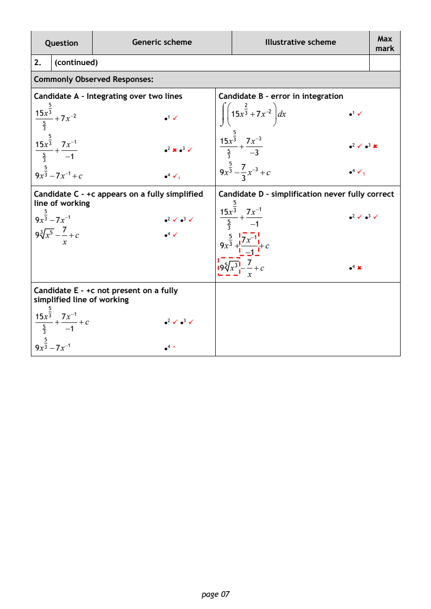
Selectable page text
Max
Question Generic scheme Illustrative scheme
mark
2. (continued)
Commonly Observed Responses:
Candidate A – Integrating over two lines Candidate B – error in integration
⌠
15x⁵³
+7x⁻² •1 ✓
15x²³ +7x⁻²dx •1 ✓
5 ⌡
3
15x⁵³ 7x⁻³
15x⁵³ 7x⁻¹ + •2 ✓ •3
+ •2 •3 ✓ 5 −3
5 −1 3
3
7
9x⁵³ − x⁻³ +c •4 ✓
9x⁵³ −7x⁻¹+c •4 ✓ 1 3 1
Candidate C - +c appears on a fully simplified Candidate D – simplification never fully correct
line of working 5
15x³ 7x⁻¹
9x⁵³ −7x⁻¹ •2 ✓ •3 ✓
5
+
−1
•2 ✓ •3 ✓
7 3
9³ x⁵ − +c •4 ✓ 5
x 7x⁻¹
9x³ + +c
−1
7
9⁵ x³ − +c •4
x
Candidate E - +c not present on a fully
simplified line of working
15x⁵³ 7x⁻¹
+ +c •2 ✓ •3 ✓
5 −1
3
9x⁵³ −7x⁻¹ •4 ^
page 07PDF page 8
Paper 1, Question 3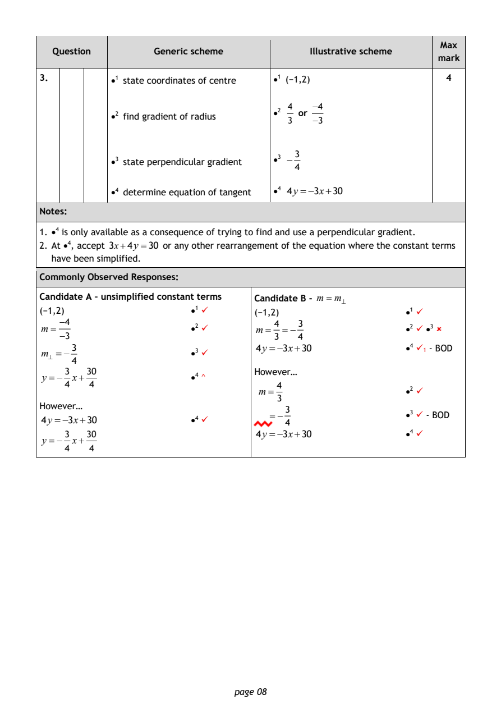
Selectable page text
Max
Question Generic scheme Illustrative scheme
mark
3. •1 state coordinates of centre •1 (−1,2) 4
4 −4
•2 find gradient of radius
•2 or
3 −3
3
•3 state perpendicular gradient •3 −
4
•4 determine equation of tangent •4 4y=−3x+30
Notes:
1. •⁴ is only available as a consequence of trying to find and use a perpendicular gradient.
2. At •⁴, accept 3x+4y=30 or any other rearrangement of the equation where the constant terms
have been simplified.
Commonly Observed Responses:
Candidate A – unsimplified constant terms Candidate B - m = m_{⊥}
(−1,2) •1 ✓ (−1,2) •1 ✓
−4 4 3
m= •2 ✓ m= =− •2 ✓ •3
−3 3 4
3 4y=−3x+30 •4 ✓ - BOD
m_{⊥} =− •3 ✓ 1
4
3 30 However…
y =− x+ •4 ^
4 4 4
m= •2 ✓
3
However…
3
=− •3 ✓ - BOD
4y=−3x+30 •4 ✓ 4
3 30 4y=−3x+30 •4 ✓
y =− x+
4 4
page 08PDF page 9
Paper 1, Question 4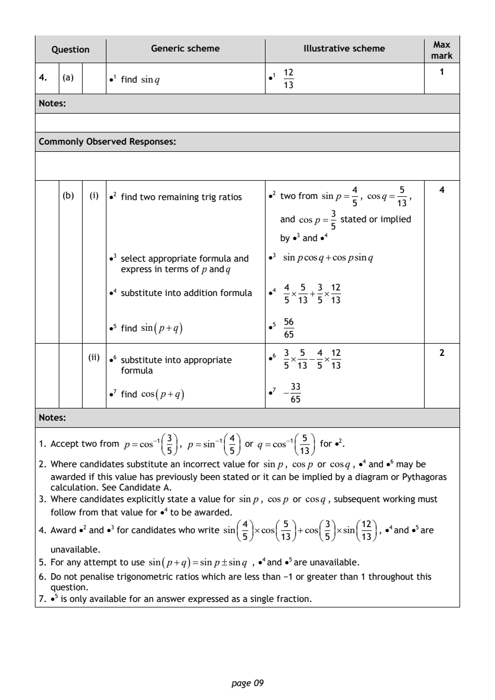
Selectable page text
Max
Question Generic scheme Illustrative scheme
mark
12 1
4. (a) •1 find sinq •1
13
Notes:
Commonly Observed Responses:
4 5 4
(b) (i) •2 find two remaining trig ratios •2 two from sin p= , cosq= ,
5 13
3
and cos p= stated or implied
5
by •³ and •⁴
•3 select appropriate formula and •3 sin pcosq+cospsinq
express in terms of pandq
4 5 3 12
•4 substitute into addition formula •4 × + ×
5 13 5 13
56
•5 find sin(p+q) •5
65
3 5 4 12 2
(ii) •6 substitute into appropriate •6 × − ×
5 13 5 13
formula
33
•7 find cos(p+q) •7 −
65
Notes:
3 4 5
1. Accept two from p=cos⁻¹ , p=sin⁻¹ or q=cos⁻¹ for •².
5 5 13
2. Where candidates substitute an incorrect value for sin p, cos p or cosq, •⁴ and •⁶ may be
awarded if this value has previously been stated or it can be implied by a diagram or Pythagoras
calculation. See Candidate A.
3. Where candidates explicitly state a value for sin p, cos p or cosq, subsequent working must
follow from that value for •⁴ to be awarded.
4 5 3 12
4. Award •² and •³ for candidates who write sin ×cos +cos ×sin , •4 and •⁵ are
5 13 5 13
unavailable.
5. For any attempt to use sin(p+q)=sin p±sinq , •⁴ and •⁵ are unavailable.
6. Do not penalise trigonometric ratios which are less than −1 or greater than 1 throughout this
question.
7. •⁵ is only available for an answer expressed as a single fraction.
page 09PDF page 10
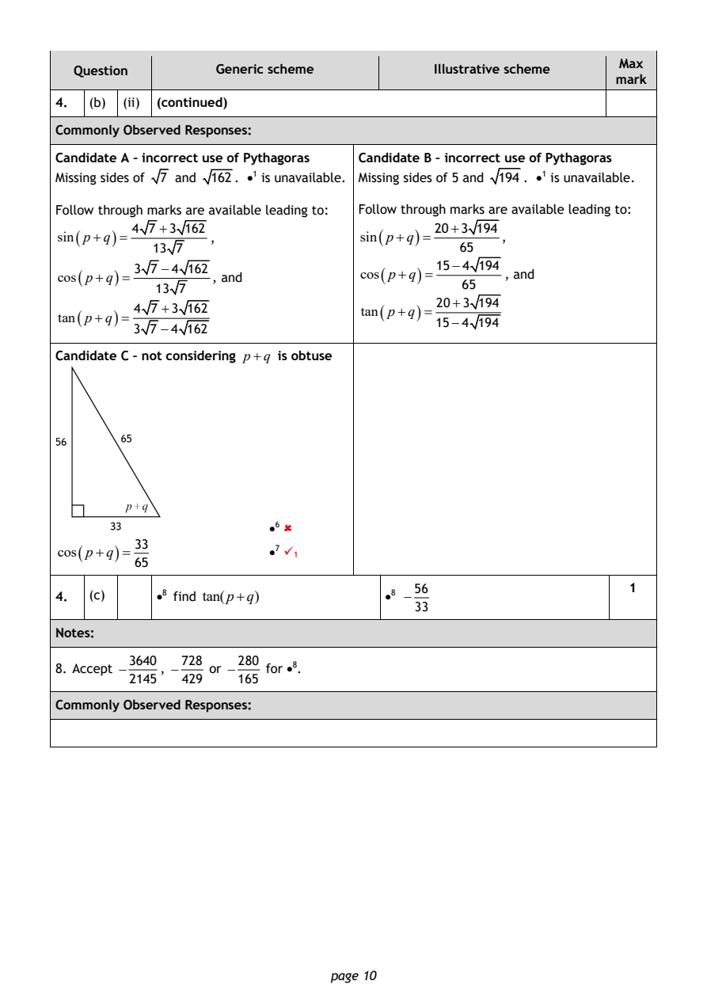
Selectable page text
Max
Question Generic scheme Illustrative scheme
mark
4. (b) (ii) (continued)
Commonly Observed Responses:
Candidate A – incorrect use of Pythagoras Candidate B – incorrect use of Pythagoras
Missing sides of 7 and 162. •¹ is unavailable. Missing sides of 5 and 194 . •1 is unavailable.
Follow through marks are available leading to: Follow through marks are available leading to:
4 7 +3 162 20+3 194
sin(p+q)= , sin(p+q)= ,
13 7 65
cos(p+q)= 3 7 −4 162 , and cos(p+q)= 15−4 194 , and
65
13 7
20+3 194
tan(p+q)=
4 7 +3 162 tan(p+q)=
15−4 194
3 7 −4 162
Candidate C – not considering p+q is obtuse
•6
33
cos(p+q)= •7 ✓
1
65
56 1
4. (c) •8 find tan(p+q) •8 −
33
Notes:
3640 728 280
8. Accept − , − or − for •⁸.
2145 429 165
Commonly Observed Responses:
page 10PDF page 11
Paper 1, Question 5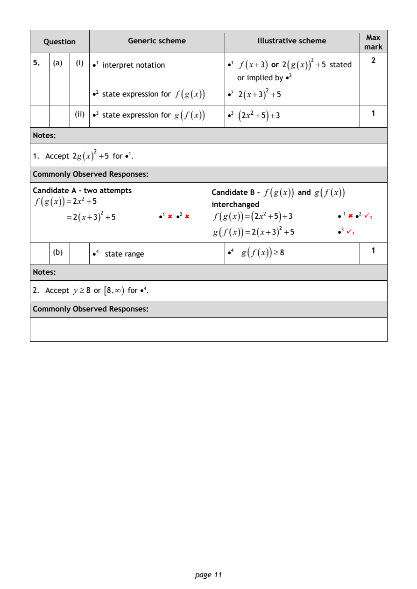
Selectable page text
Max
Question Generic scheme Illustrative scheme
mark
5. (a) (i) •1 interpret notation •1 f (x+3) or 2 ( g(x)) ² +5 stated 2
or implied by •²
•2 state expression for f ( g(x)) •2 2(x+3)² +5
(ii) •3 state expression for g ( f (x)) •3 ( 2x² +5 ) +3 1
Notes:
1. Accept 2g(x)² +5 for •¹.
Commonly Observed Responses:
Candidate A - two attempts Candidate B - f ( g(x)) and g ( f (x))
f
( g(x))
=2x² +5
interchanged
=2(x+3)² +5 •1 •2 f ( g(x)) = ( 2x² +5 ) +3 • 1 •2 ✓
1
g ( f (x)) =2(x+3)² +5 •3 ✓
1
(b) •4 state range •4 g ( f (x)) ≥8 1
Notes:
2. Accept y≥8 or [8,∞) for •⁴.
Commonly Observed Responses:
page 11PDF page 12
Paper 1, Question 6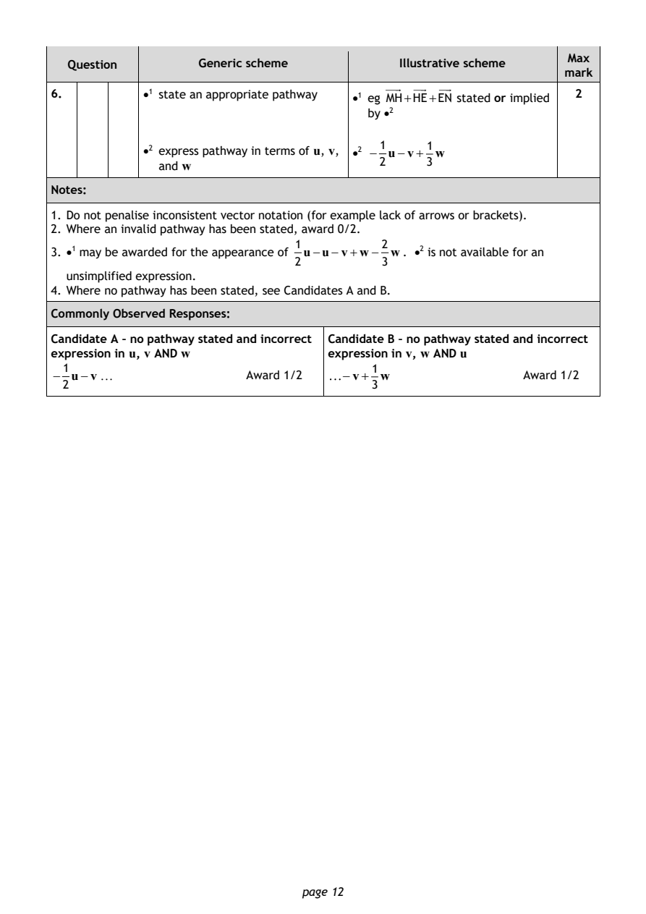
Selectable page text
Max
Question Generic scheme Illustrative scheme
mark
6. •1 state an appropriate pathway •1 eg MH+HE+EN stated or implied 2
by •²
1 1
•2 express pathway in terms of u, v, •2 − u−v+ w
2 3
and w
Notes:
1. Do not penalise inconsistent vector notation (for example lack of arrows or brackets).
2. Where an invalid pathway has been stated, award 0/2.
1 2
3. •¹ may be awarded for the appearance of u−u−v+w− w. •² is not available for an
2 3
unsimplified expression.
4. Where no pathway has been stated, see Candidates A and B.
Commonly Observed Responses:
Candidate A – no pathway stated and incorrect Candidate B – no pathway stated and incorrect
expression in u, v AND w expression in v, w AND u
1 1
− u−v… Award 1/2 −v+ w Award 1/2
2 3
page 12PDF page 13
Paper 1, Question 7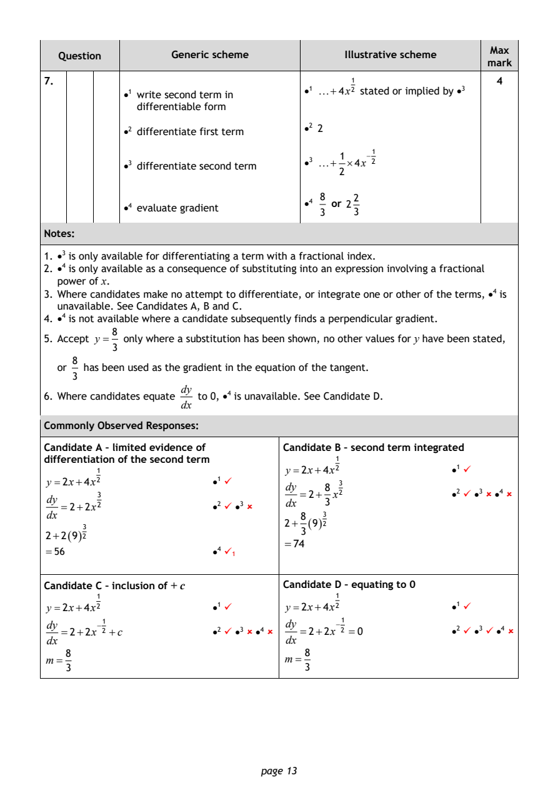
Selectable page text
Max
Question Generic scheme Illustrative scheme
mark
7. 4
•1 write second term in •1 …+4x²¹ stated or implied by •³
differentiable form
•2 differentiate first term •2 2
1
•3 differentiate second term •3 …+ ×4x⁻²¹
2
8 2
•4 evaluate gradient •4 or 2
3 3
Notes:
1. •³ is only available for differentiating a term with a fractional index.
2. •⁴ is only available as a consequence of substituting into an expression involving a fractional
power of x.
3. Where candidates make no attempt to differentiate, or integrate one or other of the terms, •⁴ is
unavailable. See Candidates A, B and C.
4. •⁴ is not available where a candidate subsequently finds a perpendicular gradient.
8
5. Accept y = only where a substitution has been shown, no other values for y have been stated,
3
8
or has been used as the gradient in the equation of the tangent.
3
dy
6. Where candidates equate to 0, •⁴ is unavailable. See Candidate D.
dx
Commonly Observed Responses:
Candidate A – limited evidence of Candidate B – second term integrated
differentiation of the second term
y =2x+4x²¹ •1 ✓
y =2x+4x²¹ •1 ✓
dy 8
3 =2+ x²³ •2 ✓ •3 •4
dy dx 3
=2+2x² •2 ✓ •3
dx 8
2+ (9) 2³
3
2+2(9) 2³
=74
=56 •4 ✓
1
Candidate C – inclusion of + c Candidate D – equating to 0
y =2x+4x²¹ •1 ✓ y =2x+4x²¹ •1 ✓
dy dy
=2+2x⁻²¹ +c •2 ✓ •3 •4 =2+2x⁻²¹ =0 •2 ✓ •3 ✓ •4
dx dx
8 8
m= m=
3 3
page 13PDF page 14
Paper 1, Question 8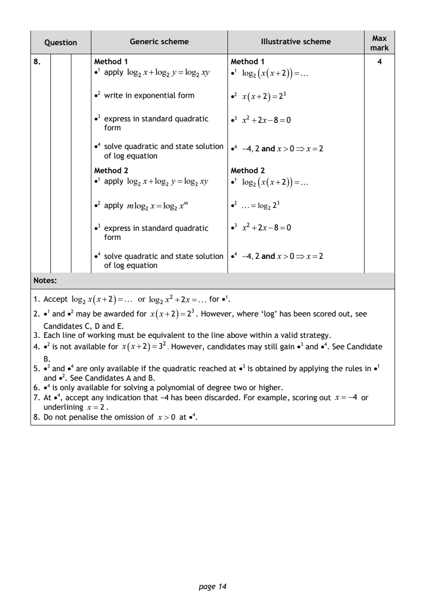
Selectable page text
Max
Question Generic scheme Illustrative scheme
mark
8. Method 1 Method 1 4
•1 apply log₂ x+log₂ y=log₂ xy •1 log₂ ( x(x+2)) =
•2 write in exponential form •2 x(x+2)=2³
•3 express in standard quadratic •3 x² +2x−8=0
form
•4 solve quadratic and state solution • ⁴ −4,2and x>0⇒x=2
of log equation
Method 2 Method 2
•1 apply log₂ x+log₂ y=log₂ xy •1 log₂ ( x(x+2)) =
•2 apply mlog₂ x=log₂ x^{m} •2 =log₂2³
•3 express in standard quadratic •3 x² +2x−8=0
form
•4 solve quadratic and state solution •⁴ −4,2and x>0⇒x=2
of log equation
Notes:
1. Accept log₂ x(x+2)=… or log₂ x² +2x=… for •¹.
2. •¹ and •² may be awarded for x(x+2)=2³. However, where ‘log’ has been scored out, see
Candidates C, D and E.
3. Each line of working must be equivalent to the line above within a valid strategy.
4. •² is not available for x(x+2)=3². However, candidates may still gain •³ and •⁴. See Candidate
B.
5. •³ and •⁴ are only available if the quadratic reached at •³ is obtained by applying the rules in •¹
and •². See Candidates A and B.
6. •⁴ is only available for solving a polynomial of degree two or higher.
7. At •⁴, accept any indication that −4 has been discarded. For example, scoring out x=−4 or
underlining x =2.
8. Do not penalise the omission of x >0 at •⁴.
page 14PDF page 15
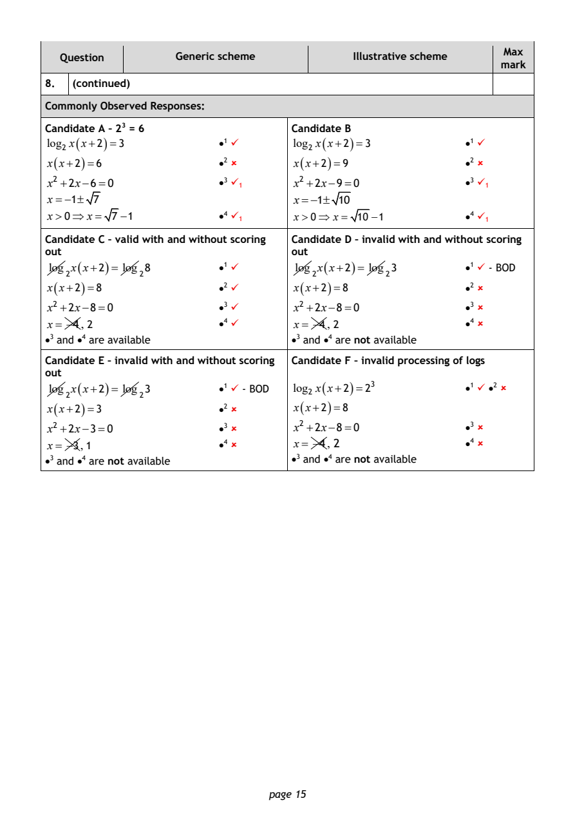
Selectable page text
Max
Question Generic scheme Illustrative scheme
mark
8. (continued)
Commonly Observed Responses:
Candidate A – 2³ = 6 Candidate B
log₂ x(x+2)=3 •1 ✓ log₂ x(x+2)=3 •1 ✓
x(x+2)=6 •2 x(x+2)=9 •2
x² +2x−6=0 •3 ✓ x² +2x−9=0 •3 ✓
1 1
x=−1± 7 x=−1± 10
x>0⇒ x= 7 −1 •4 ✓ x>0⇒ x = 10 −1 •4 ✓
1 1
Candidate C – valid with and without scoring Candidate D – invalid with and without scoring
out out
log₂x(x+2)= log₂8 •1 ✓ log₂x(x+2)= log₂3 •1 ✓ - BOD
x(x+2)=8 •2 ✓ x(x+2)=8 •2
x² +2x−8=0 •3 ✓ x² +2x−8=0 •3
x= −4, 2 •4 ✓ x= −4, 2 •4
•3 and •⁴ are available •3 and •⁴ are not available
Candidate E – invalid with and without scoring Candidate F – invalid processing of logs
out
log₂x(x+2)= log₂3 •1 ✓ - BOD log₂ x(x+2)=2³ •1 ✓ •2
x(x+2)=3 •2 x(x+2)=8
x² +2x−3=0 •3 x² +2x−8=0 •3
x= −3,1 •4 x= −4, 2 •4
•3 and •⁴ are not available •3 and •⁴ are not available
page 15PDF page 16
Paper 1, Question 9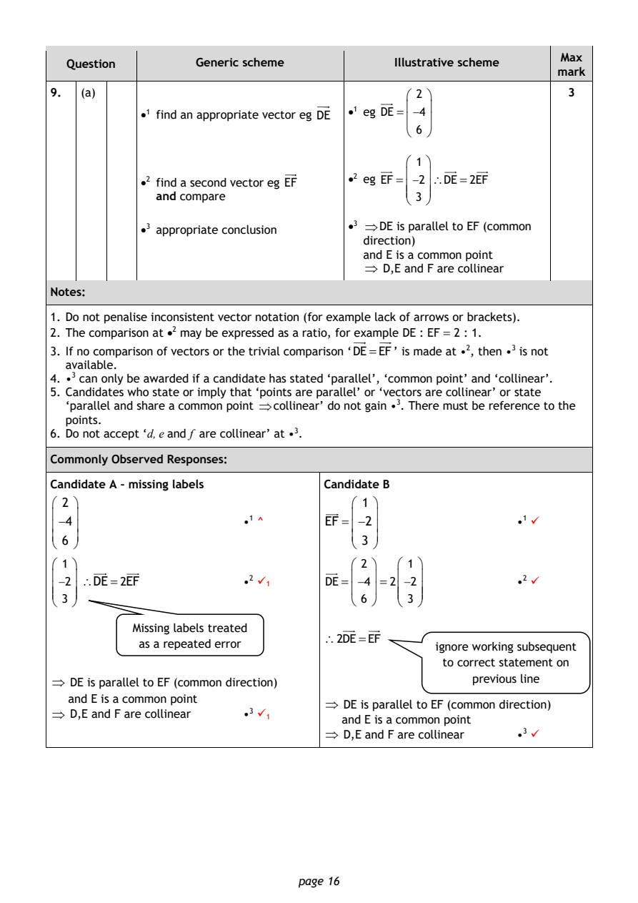
Selectable page text
Max
Question Generic scheme Illustrative scheme
mark
9. (a)
2 3
•1 find an appropriate vector eg DE •1 eg DE= −4
6
1
•2 find a second vector eg EF •2 eg EF= −2 ∴DE=2EF
and compare 3
•3 appropriate conclusion •3 ⇒DE is parallel to EF (common
direction)
and E is a common point
⇒ D,E and F are collinear
Notes:
1. Do not penalise inconsistent vector notation (for example lack of arrows or brackets).
2. The comparison at •² may be expressed as a ratio, for example DE : EF = 2 : 1.
3. If no comparison of vectors or the trivial comparison ‘DE=EF’ is made at •², then •³ is not
a₃vailable.
4. • can only be awarded if a candidate has stated ‘parallel’, ‘common point’ and ‘collinear’.
5. Candidates who state or imply that ‘points are parallel’ or ‘vectors are collinear’ or state
‘parallel and share a common point ⇒collinear’ do not gain •³. There must be reference to the
points.
6. Do not accept ‘d, e and f are collinear’ at •³.
Commonly Observed Responses:
Candidate A – missing labels Candidate B
2 1
−4 •1 ^ EF = −2 •1 ✓
6 3
1 2 1
−2 ∴DE=2EF •2 ✓ DE= −4 =2 −2 •2 ✓
1
3 6 3
Missing labels treated
∴2DE=EF
as a repeated error ignore working subsequent
to correct statement on
⇒ DE is parallel to EF (common direction) previous line
and E is a common point
⇒ DE is parallel to EF (common direction)
⇒ D,E and F are collinear •3 ✓
1 and E is a common point
⇒ D,E and F are collinear •3 ✓
page 16PDF page 17
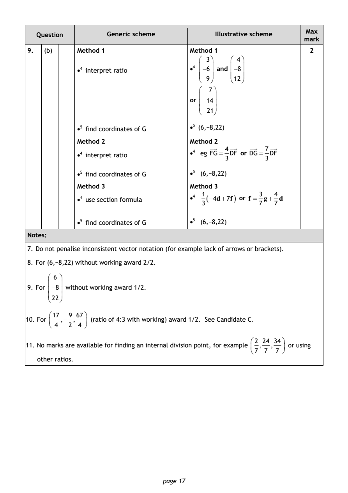
Selectable page text
Max
Question Generic scheme Illustrative scheme
mark
9. (b) Method 1 Method 1 2
3 4
•4 interpret ratio •4 −6 and −8
9 12
7
or −14
21
•5 find coordinates of G •5 (6,−8,22)
Method 2 Method 2
4 7
•4 interpret ratio •4 eg FG= DF or DG= DF
3 3
•5 find coordinates of G •5 (6,−8,22)
Method 3 Method 3
1 3 4
•4 use section formula •4 (−4d+7f) or f = g+ d
3 7 7
•5 find coordinates of G •5 (6,−8,22)
Notes:
7. Do not penalise inconsistent vector notation (for example lack of arrows or brackets).
8. For (6,−8,22) without working award 2/2.
6
9. For −8 without working award 1/2.
22
17 9 67
10. For ,− , (ratio of 4:3 with working) award 1/2. See Candidate C.
4 2 4
2 24 34
11. No marks are available for finding an internal division point, for example , , or using
7 7 7
other ratios.
page 17PDF page 18
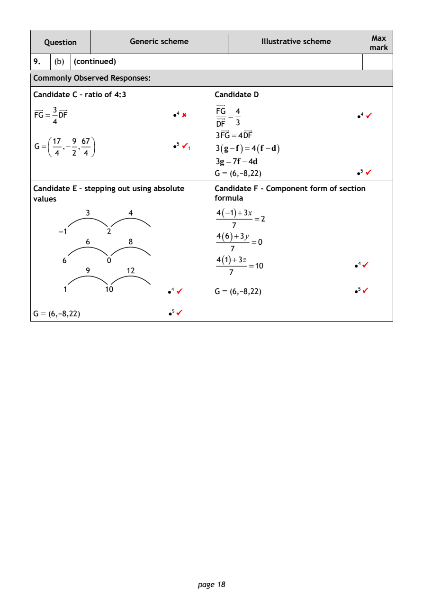
Selectable page text
Max
Question Generic scheme Illustrative scheme
mark
9. (b) (continued)
Commonly Observed Responses:
Candidate C – ratio of 4:3 Candidate D
3 FG 4
FG= DF •4 = •4 ✓
4 DF 3
3FG=4DF
17 9 67
G= ,− , •5 ✓ 1 3(g−f)=4(f −d)
4 2 4
3g=7f −4d
G = (6,−8,22) •5 ✓
Candidate E – stepping out using absolute Candidate F - Component form of section
values formula
4(−1)+3x
=2
7
4(6)+3y
=0
7
4(1)+3z
=10 •4 ✓
7
•4 ✓ G = (6,−8,22) •5 ✓
G = (6,−8,22) •5 ✓
page 18PDF page 19
Paper 1, Question 10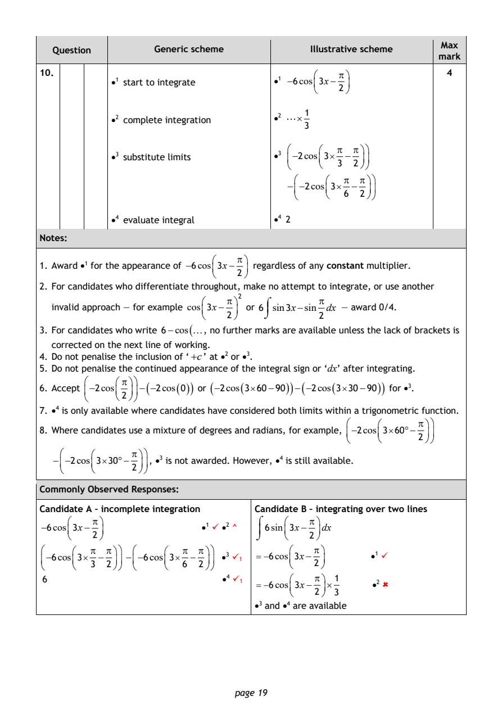
Selectable page text
Max
Question Generic scheme Illustrative scheme
mark
10. π 4
•1 start to integrate •1 −6cos 3x−
2
1
•2 complete integration •2 ×
3
π π
•3 substitute limits •3 −2cos 3× −
3 2
π π
− −2cos 3× −
6 2
•4 evaluate integral •4 2
Notes:
π
1. Award •¹ for the appearance of −6cos 3x− regardless of any constant multiplier.
2
2. For candidates who differentiate throughout, make no attempt to integrate, or use another
π² ⌠ π
invalid approach — for example cos 3x− or 6sin3x−sin dx — award 0/4.
2 ⌡ 2
3. For candidates who write 6−cos(…, no further marks are available unless the lack of brackets is
corrected on the next line of working.
4. Do not penalise the inclusion of ‘+c’ at •² or •³.
5. Do not penalise the continued appearance of the integral sign or ‘dx’ after integrating.
π
6. Accept −2cos − ( −2cos(0)) or ( −2cos(3×60−90)) − ( −2cos(3×30−90)) for •³.
2
7. •⁴ is only available where candidates have considered both limits within a trigonometric function.
π
8. Where candidates use a mixture of degrees and radians, for example, −2cos 3×60°−
2
π
− −2cos 3×30°− , •3 is not awarded. However, •⁴ is still available.
2
Commonly Observed Responses:
Candidate A – incomplete integration Candidate B – integrating over two lines
π ⌠ π
−6cos 3x− •1 ✓ •2 ^ 6sin 3x− dx
2 ⌡ 2
π π π π π
−6cos 3× 3 − 2 − −6cos 3× 6 − 2 •3 ✓ 1 =−6cos 3x− 2 •1 ✓
6 •4 ✓ π 1
1 =−6cos 3x− × •2
2 3
•3 and •⁴ are available
page 19PDF page 20
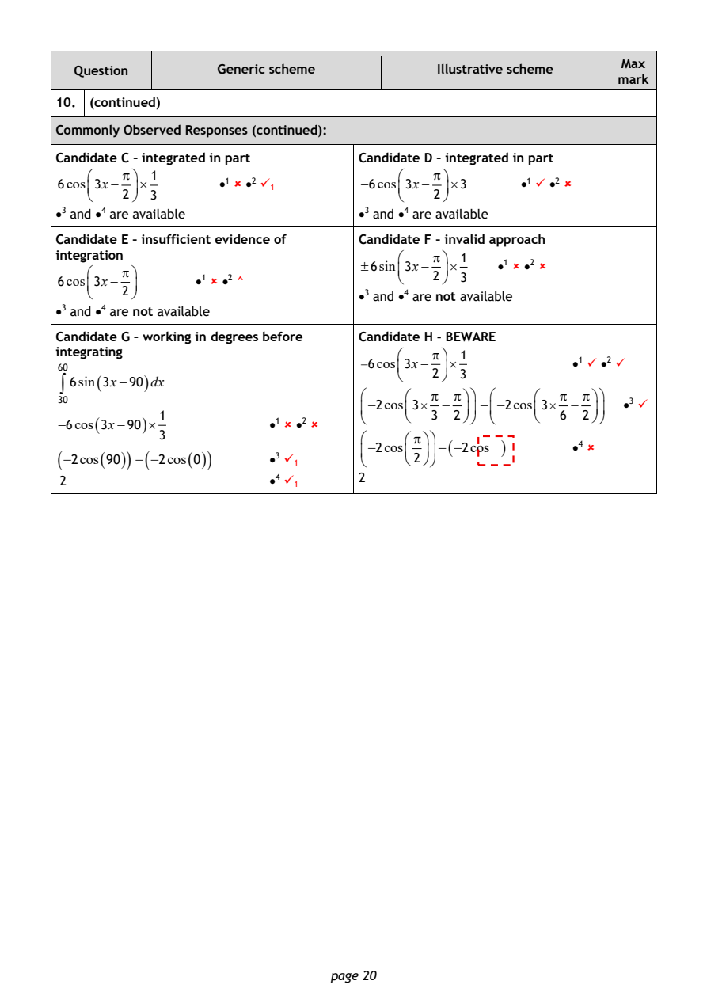
Selectable page text
Max
Question Generic scheme Illustrative scheme
mark
10. (continued)
Commonly Observed Responses (continued):
Candidate C – integrated in part Candidate D – integrated in part
π 1 π
6cos 3x− × •1 •2 ✓ 1 −6cos 3x− ×3 •1 ✓ •2
2 3 2
•3 and •⁴ are available •3 and •⁴ are available
Candidate E – insufficient evidence of Candidate F – invalid approach
integration π 1
6cos 3x− π •1 •2 ^ ±6sin 3x− 2 × 3 •1 •2
2 •3 and •⁴ are not available
•3 and •⁴ are not available
Candidate G – working in degrees before Candidate H - BEWARE
integrating π 1
60 −6cos 3x− × •1 ✓ •2 ✓
2 3
∫ 6sin(3x−90)dx
π π π π
30 −2cos 3× − − −2cos 3× − •3 ✓
−6cos(3x−90)× 1 •1 •2 3 2 6 2
3 π
−2cos −(−2cos ) •4
( −2cos(90)) − ( −2cos(0)) •3 ✓ 2
1
2 •4 ✓ 2
1
page 20PDF page 21
Paper 1, Question 11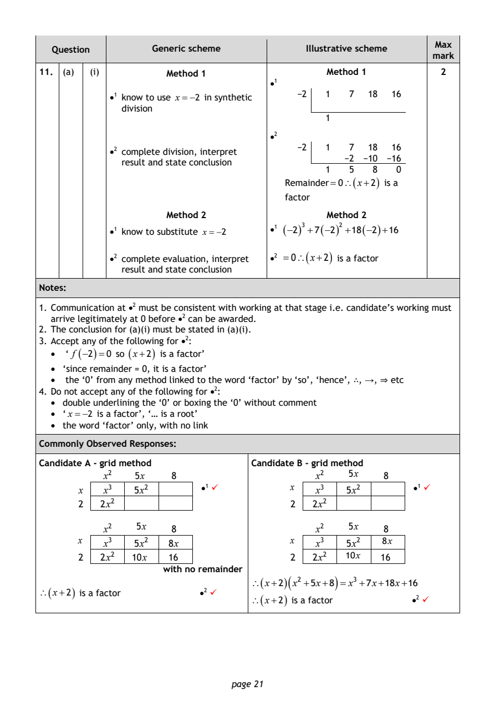
Selectable page text
Max
Question Generic scheme Illustrative scheme
mark
11. (a) (i) Method 1 Method 1 2
•1
•1 know to use x=−2 in synthetic −2 1 7 18 16
division
1
•2
−2 1 7 18 16
•2 complete division, interpret
−2 −10 −16
result and state conclusion
1 5 8 0
Remainder=0∴(x+2) is a
factor
Method 2 Method 2
•1 know to substitute x=−2 •1 (−2)³+7(−2)² +18(−2)+16
•2 complete evaluation, interpret •2 =0∴(x+2) is a factor
result and state conclusion
Notes:
1. Communication at •² must be consistent with working at that stage i.e. candidate’s working must
arrive legitimately at 0 before •² can be awarded.
2. The conclusion for (a)(i) must be stated in (a)(i).
3. Accept any of the following for •²:
• ‘ f (−2)=0 so (x+2) is a factor’
• ‘since remainder = 0, it is a factor’
• the ‘0’ from any method linked to the word ‘factor’ by ‘so’, ‘hence’, ∴, →, ⇒ etc
4. Do not accept any of the following for •²:
• double underlining the ‘0’ or boxing the ‘0’ without comment
• ‘x=−2 is a factor’, ‘… is a root’
• the word ‘factor’ only, with no link
Commonly Observed Responses:
Candidate A - grid method Candidate B - grid method
x² 5x 8 x²
5x
8
x x³ 5x² •1 ✓ x x³ 5x² •1 ✓
2 2x² 2 2x²
x²
5x
8 x²
5x
8
x x³ 5x² 8x x x³ 5x² 8x
2 2x² 10x 16 2 2x² 10x 16
with no remainder
∴(x+2)(
x²+5x+8
)
= x³+7x+18x+16
∴(x+2) is a factor •2 ✓
∴(x+2) is a factor •2 ✓
page 21PDF page 22
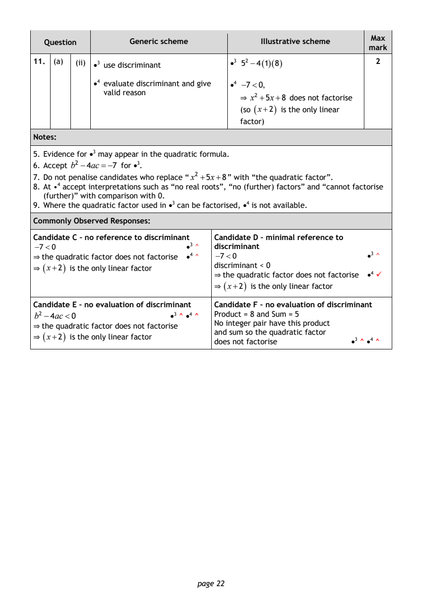
Selectable page text
Max
Question Generic scheme Illustrative scheme
mark
11. (a) (ii) •3 use discriminant •3 5² −4(1)(8) 2
•4 evaluate discriminant and give •4 −7<0,
valid reason
⇒ x² +5x+8 does not factorise
(so (x+2) is the only linear
factor)
Notes:
5. Evidence for •³ may appear in the quadratic formula.
6. Accept b² −4ac=−7 for •³.
7. Do not penalise candidates who replace “x² +5x+8” with “the quadratic factor”.
8. At •⁴ accept interpretations such as “no real roots”, “no (further) factors” and “cannot factorise
(further)” with comparison with 0.
9. Where the quadratic factor used in •³ can be factorised, •⁴ is not available.
Commonly Observed Responses:
Candidate C – no reference to discriminant Candidate D – minimal reference to
−7<0 •3 ^ discriminant
⇒ the quadratic factor does not factorise •⁴ ^ −7<0 •3 ^
⇒ (x+2) is the only linear factor discriminant < 0
⇒ the quadratic factor does not factorise •⁴ ✓
⇒ (x+2) is the only linear factor
Candidate E – no evaluation of discriminant Candidate F – no evaluation of discriminant
b² −4ac<0 •3 ^ •4 ^ Product = 8 and Sum = 5
No integer pair have this product
⇒ the quadratic factor does not factorise
and sum so the quadratic factor
⇒ (x+2) is the only linear factor
does not factorise •3 ^ •4 ^
page 22PDF page 23
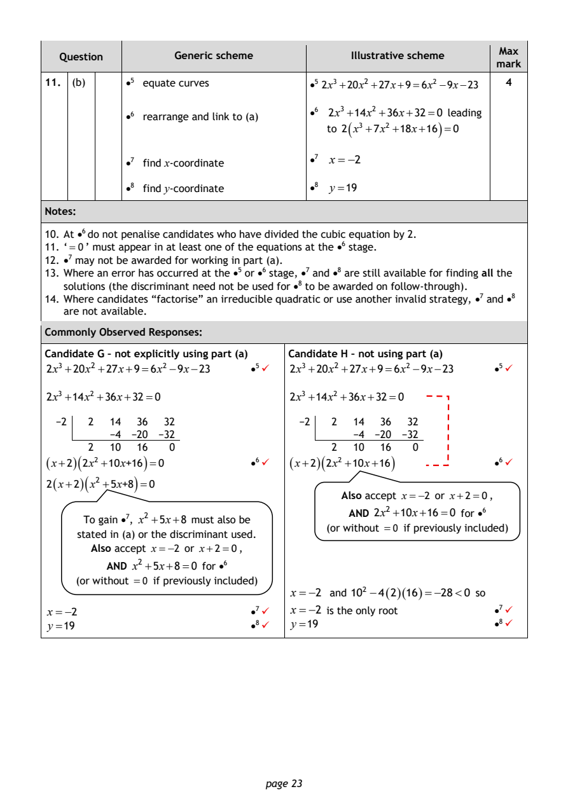
Selectable page text
Max
Question Generic scheme Illustrative scheme
mark
11. (b) •5 equate curves •5 2x³+20x²+27x+9=6x²−9x−23 4
•6 2x³+14x² +36x+32=0 leading
•6 rearrange and link to (a)
( )
to 2 x³+7x² +18x+16 =0
•7 find x-coordinate •7 x =−2
•8 find y-coordinate •8 y=19
Notes:
10. At •⁶do not penalise candidates who have divided the cubic equation by 2.
11. ‘=0’ must appear in at least one of the equations at the •⁶ stage.
12. •⁷ may not be awarded for working in part (a).
13. Where an error has occurred at the •⁵ or •⁶ stage, •⁷ and •⁸ are still available for finding all the
solutions (the discriminant need not be used for •⁸ to be awarded on follow-through).
14. Where candidates “factorise” an irreducible quadratic or use another invalid strategy, •⁷ and •⁸
are not available.
Commonly Observed Responses:
Candidate G – not explicitly using part (a) Candidate H – not using part (a)
2x³+20x² +27x+9=6x²−9x−23 •5 ✓ 2x³+20x² +27x+9=6x²−9x−23 •5 ✓
2x³+14x² +36x+32=0 2x³+14x² +36x+32=0
−2 2 14 36 32 −2 2 14 36 32
−4 −20 −32 −4 −20 −32
2 10 16 0 2 10 16 0
(x+2)( 2x² +10x+16 ) =0 •6 ✓ (x+2)( 2x² +10x+16 ) •6 ✓
2(x+2)(
x² +5x+8
)
=0
Also accept x=−2 or x+2=0,
AND 2x²+10x+16=0 for •⁶
To gain •⁷, x² +5x+8 must also be
(or without =0 if previously included)
stated in (a) or the discriminant used.
Also accept x=−2 or x+2=0,
AND x² +5x+8=0 for •⁶
(or without =0 if previously included)
x=−2 and 10² −4(2)(16)=−28<0 so
x=−2 •7 ✓ x=−2 is the only root •7 ✓
y=19 •8 ✓ y=19 •8 ✓
page 23PDF page 24
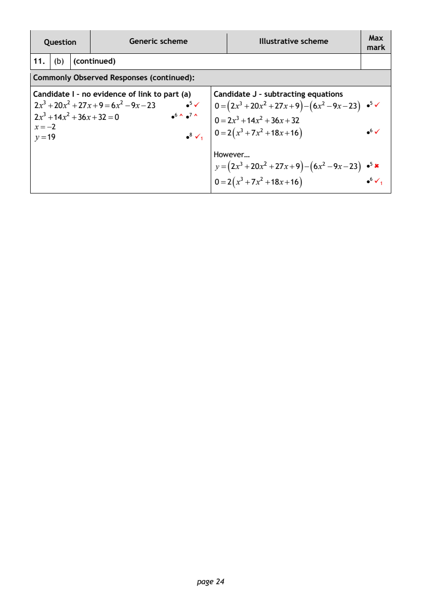
Selectable page text
Max
Question Generic scheme Illustrative scheme
mark
11. (b) (continued)
Commonly Observed Responses (continued):
Candidate I – no evidence of link to part (a) Candidate J – subtracting equations
2x³+20x² +27x+9=6x² −9x−23 •5 ✓ 0= ( 2x³+20x²+27x+9 ) − ( 6x²−9x−23 ) •5 ✓
2x³+14x² +36x+32=0 •6 ^ •7 ^
0=2x³+14x² +36x+32
x=−2
0=2 ( x³+7x² +18x+16 ) •6 ✓
y=19 •8 ✓
1
However…
y=
(
2x³+20x² +27x+9
)
−
(
6x² −9x−23
)
•⁵
0=2 ( x³+7x² +18x+16 ) •6 ✓
1
page 24PDF page 25
Paper 1, Question 12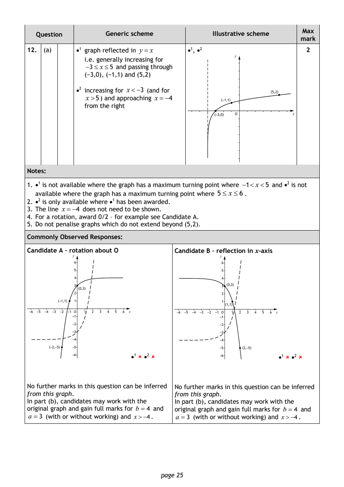
Selectable page text
Max
Question Generic scheme Illustrative scheme
mark
12. (a) •1 graph reflected in y= x •1, •2 2
i.e. generally increasing for
−3≤ x≤5 and passing through
(−3,0), (−1,1) and (5,2)
•2 increasing for x<−3 (and for
x>5) and approaching x=−4
from the right
Notes:
1. •¹ is not available where the graph has a maximum turning point where −1< x<5 and •² is not
available where the graph has a maximum turning point where 5≤ x≤6.
2. •² is only available where •¹ has been awarded.
3. The line x=−4 does not need to be shown.
4. For a rotation, award 0/2 – for example see Candidate A.
5. Do not penalise graphs which do not extend beyond (5,2).
Commonly Observed Responses:
Candidate A – rotation about O Candidate B – reflection in x-axis
•1 •2 •1 •2
No further marks in this question can be inferred No further marks in this question can be inferred
from this graph. from this graph.
In part (b), candidates may work with the In part (b), candidates may work with the
original graph and gain full marks for b = 4 and original graph and gain full marks for b = 4 and
a =3 (with or without working) and x>−4. a =3 (with or without working) and x>−4.
page 25PDF page 26
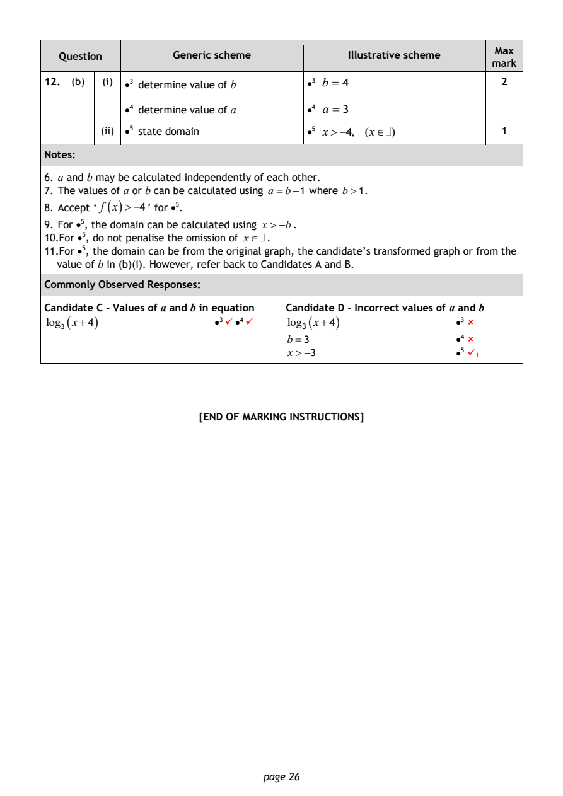
Selectable page text
Max
Question Generic scheme Illustrative scheme
mark
12. (b) (i) •3 determine value of b •3 b = 4 2
•4 determine value of a •4 a = 3
(ii) •5 state domain •5 x>−4, (x∈) 1
Notes:
6. a and b may be calculated independently of each other.
7. The values of a or b can be calculated using a=b−1 where b>1.
8. Accept ‘ f (x)>−4’ for •⁵.
9. For •⁵, the domain can be calculated using x >−b.
10.For •⁵, do not penalise the omission of x∈.
11.For •⁵, the domain can be from the original graph, the candidate’s transformed graph or from the
value of b in (b)(i). However, refer back to Candidates A and B.
Commonly Observed Responses:
Candidate C - Values of a and b in equation Candidate D - Incorrect values of a and b
log₃(x+4) •3 ✓ •4 ✓ log₃(x+4) •3
b=3 •4
x>−3 •5 ✓
1
[END OF MARKING INSTRUCTIONS]
page 26